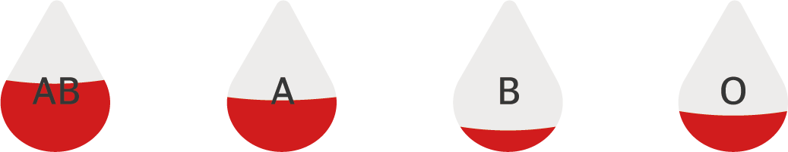

사랑의 헌혈 로

2021년 11월 22일 00:00 기준 혈액 보유 현황
혈액 수금 위기 단계 기준
[5일분 미만] '주의' 단계입니다.


대한민국의 헌혈 참여율은 어떻게 되나요?
현재 대한민국은 코로나 19 장기화로 인해 혈액 수급이 계속해서 부족한 상황이다. 우리나라 헌혈 참여율은 2019년 279만명, 2020년 261만명, 2021년 8월 기준 156만명으로 매년 참여율이 저조해지고 있다.
대한민국의 참여율 연령 비율은 어떻게 되나요?
한국의 혈액 수급은 10대와 20대 청년층에서 채혈한 혈액이 전체량의 약 55%로 혈액량의 절반 가량을 차지하는 점은 인구절벽 현상으로 젊은이들의 비율이 크게 줄어들고 있는 현재 상당히 위협적이다.
대한민국의 참여율 성비는 어떻게 되나요?
KOSIS 국가통계포털에 의하면 남성은 73.3%, 여성은 26.7%를 차지한다. 상당수의 여성들이 월경 불균형과 이로 인한 스트레스, 그리고 생리통으로 인한 진통제 복용, 다이어트, 체력 부진 문제 등의 이유로 헌혈 부적격 상황에 있다.

대한민국의 헌혈 실태는 어떻게 되나요?
헌혈의 참여율과 헌혈 보유량은 빠르게 줄어들고 있다.
헌혈의 비율이 줄어드는 이유는 뭔가요?
그 이유로는 헌혈에 참여하는 봉사자들이 코로나19로 인해 집 밖을 나서지 않거나 헌혈 중 코로나19에 감염될지도 모른다는 불안감 때문에 현혈의 참여율이 점점 줄어들고 있다. 2020년에는 코로나 사태 때문에 헌혈자가 줄어들면서 혈액 보유량이 ‘주의 단계’까지 내려간 적이 있다. 이 상황이 지속된다면 심각한 혈액 보유 문제가 발생하게 된다.